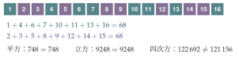

STEP I 1992，第 5 題
繼續之前，請先閱讀題目（原題為英文）。題目載於 STEP Support Programme 的題目資料庫： step.maths.org/questions/92-s1-q5
引子
把 \(1\) 至 \(16\) 這些數分成兩隊，每隊八個： \[\{1, 4, 6, 7, 10, 11, 13, 16\} \quad\text{和}\quad \{2, 3, 5, 8, 9, 12, 14, 15\}.\] 兩隊的和都是 \(68\)。兩隊的平方和都是 \(748\)。兩隊的立方和都是 \(9248\)。很難相信這不是純粹的巧合，但它其實是一個無窮無盡的規律的第三步：只要用正確的方法把 \(1\) 至 \(32\) 分開，連四次方之和也會相等。
這個分法由 Eugène Prouhet 於 1851 年發現，而它背後的規則，即 Thue–Morse 數列（Thue–Morse sequence），出現的地方多得驚人：數論、計算理論、國際象棋，以至最公平的輪流方式。本題透過一個多項式（polynomial）及其導數（derivative）把它發掘出來。
動筆之前
若多項式 \(\mathrm{p}(x) = \sum c_kx^k\) 滿足 \(\mathrm{p}(1) = 0\)，這對各係數（coefficient）有甚麼含意？若 \(\mathrm{p}'(1) = 0\) 又如何？
\(\mathrm{p}(1) = \sum c_k\)，所以 \(\mathrm{p}(1) = 0\) 表示各係數之和為零。而 \(\mathrm{p}'(x) = \sum kc_kx^{k-1}\)，所以 \(\mathrm{p}'(1) = \sum kc_k\)。若所有係數都是 \(\pm1\)，這兩個條件就是說：\(+1\) 與 \(-1\) 所在的位置數目相同，而且位置之和也相等。
逐步解題
階段 1 一個三重根
把 \(1 - x^2\) 和 \(1 - x^4\) 因式分解。當中共出現多少個因式 \(1 - x\)？
由於 \(1 - x^2 = (1 - x)(1 + x)\) 及 \(1 - x^4 = (1 - x)(1 + x)(1 + x^2)\)， \[\mathrm{p}_0(x) = (1 - x)^3(1 + x)^2(1 + x^2),\] 所以 \((1 - x)^3\) 是一個因式（factor）。■
階段 2 在 \(1\) 處的導數
若 \((1 - x)^3\) 整除 \(\mathrm{p}_0\)，那麼 \((1 - x)\) 的多少次方整除 \(\mathrm{p}_0'\)？接着 \(\mathrm{p}_1 = x\mathrm{p}_0'\) 和 \(\mathrm{p}_1'\) 又如何？
寫成 \(\mathrm{p}_0(x) = (1 - x)^3\mathrm{q}(x)\)。根據積法則（product rule），\(\mathrm{p}_0'(x) = -3(1 - x)^2\mathrm{q}(x) + (1 - x)^3\mathrm{q}'(x)\)，它有因式 \((1 - x)^2\)。所以 \(\mathrm{p}_0'(1) = 0\)。於是 \(\mathrm{p}_1(x) = x\mathrm{p}_0'(x)\) 同樣有因式 \((1 - x)^2\)，而用相同的論證可知 \(\mathrm{p}_1'\) 有因式 \((1 - x)\)，所以 \(\mathrm{p}_1'(1) = 0\)。■
階段 3 讀出各係數
展開可得 \((1 - x)(1 - x^2) = 1 - x - x^2 + x^3\)，然後 \[\mathrm{p}_0(x) = 1 - x - x^2 + x^3 - x^4 + x^5 + x^6 - x^7.\]
以係數 \(c_k\) 表示，\(\mathrm{p}_0'(1)\) 和 \(\mathrm{p}_1'(1)\) 分別是甚麼？
由於 \(\mathrm{p}_1(x) = x\mathrm{p}_0'(x) = \sum kc_kx^k\)，我們有 \(\mathrm{p}_1'(1) = \sum k^2c_k\)。係數在 \(k = 0, 3, 5, 6\) 時為 \(+1\)，在 \(k = 1, 2, 4, 7\) 時為 \(-1\)。所以 \(\mathrm{p}_0'(1) = 0\) 和 \(\mathrm{p}_1'(1) = 0\) 即是說 \[\begin{aligned} 0 + 3 + 5 + 6 &= 1 + 2 + 4 + 7 \quad (= 14), \\ 0^2 + 3^2 + 5^2 + 6^2 &= 1^2 + 2^2 + 4^2 + 7^2 \quad (= 70), \end{aligned}\] 略去 \(0\) 之後，這正是所需的恆等式。■
階段 4 再多一個因式
要令立方和也平衡，我們需要第四個因式 \((1 - x)\)。應該用哪一個多項式取代 \(\mathrm{p}_0\)？
取 \(\mathrm{P}(x) = (1 - x)(1 - x^2)(1 - x^4)(1 - x^8)\)，它有因式 \((1 - x)^4\)。它的係數來自 \(\mathrm{p}_0(x) - x^8\mathrm{p}_0(x)\)：先是 \(0\) 至 \(7\) 的正負號規律，然後在 \(8\) 至 \(15\) 重複同一規律，但正負號全部相反： \[\begin{array}{l*{16}{c}} k & 0 & 1 & 2 & 3 & 4 & 5 & 6 & 7 & 8 & 9 & 10 & 11 & 12 & 13 & 14 & 15 \\ c_k & + & - & - & + & - & + & + & - & - & + & + & - & + & - & - & + \end{array}\] 把第 2 階段的論證再用一次，可知對於 \(r = 0, 1, 2, 3\) 都有 \(\sum c_k k^r = 0\)。取 \(+\) 號的位置 \(\{0, 3, 5, 6, 9, 10, 12, 15\}\) 和 \(-\) 號的位置 \(\{1, 2, 4, 7, 8, 11, 13, 14\}\)。當 \(r = 1, 2, 3\) 時，來自 \(0\) 的一項為零，所以可以略去。因此以下的次序 \[a_1, \ldots, a_8 = 1, 2, 4, 7, 8, 11, 13, 14, \qquad a_9, \ldots, a_{15} = 3, 5, 6, 9, 10, 12, 15\] 符合要求：兩半的和都是 \(60\)，平方和都是 \(620\)，立方和都是 \(7200\)。■
回顧
導數能偵測重根（repeated root）。因式 \((1 - x)^m\) 會迫使首 \(m - 1\) 階導數在 \(x = 1\) 處全部為零。
先乘以 \(x\) 再求導把 \(\sum kc_k\) 變成 \(\sum k^2c_k\)，如此類推便得到更高次方。
倍增。每多一個因式 \((1 - x^{2^m})\)，長度便增加一倍，同時多一個次方達到平衡。
背後的數學
Thue–Morse 數列
\((1 - x)(1 - x^2)(1 - x^4)(1 - x^8)\cdots\) 各係數的正負號構成 Thue–Morse 數列。以 \(0\) 代表 \(+\)、\(1\) 代表 \(-\)，寫出來就是： \[0\,1\,1\,0\;1\,0\,0\,1\;1\,0\,0\,1\;0\,1\,1\,0\;\ldots\] 它有三種等價的描述。
倍增：由 \(0\) 開始，不斷把手上已有的部分的補（complement，即把 \(0\) 與 \(1\) 互換）接在後面：\(0 \to 01 \to 0110 \to 01101001 \to \cdots\)。
二進制數字：把 \(k\) 寫成二進制（binary）時，若當中 \(1\) 的個數是偶數，第 \(k\) 項便是 \(0\)；若是奇數，便是 \(1\)。（這就是 \(x^k\) 的正負號為 \((-1)^{\text{1 的個數，取自 } k}\) 的原因：要從乘積中得出 \(x^k\)，就要選取那些在二進制中組成 \(k\) 的因子 \(x^{2^m}\)，而每一個都帶來一個負號。）
多項式：\(\prod_m (1 - x^{2^m})\) 的各係數，一如題目所示。
按 Thue–Morse 數列把 \(0, 1, \ldots, 2^{N} - 1\) 分開，所得的兩個集合對於每個 \(r < N\) 都有相等的 \(r\) 次方之和（圖 9.7.1）。這就是 Prouhet–Tarry–Escott 問題（Prouhet–Tarry–Escott problem）：找出兩個不同的整數集合，使它們的 \(r\) 次方之和在 \(r = 1, \ldots, k\) 時全部相等。Prouhet 的解用了 \(2^{k+1}\) 個數；究竟最少需要多少個數，是一個著名的未解決問題。

最公平的輪流方式
兩個小孩輪流從一堆糖果中挑選，最好的先被選走。若他們以 \(ABABAB\ldots\) 的次序交替，那麼每一對糖果中較好的一顆總是歸 \(A\)，這是一種系統性的優勢。\(ABBA\) 的次序較為公平，而 \(ABBABAAB\) 更加公平：這正是 Thue–Morse 數列，而次方和平衡恰恰就是箇中原因。若糖果的價值由其位置的一個光滑函數給出，把該函數展開成多項式，便可看到 Thue–Morse 次序會把它的首幾項抵銷。同樣的想法曾被提議用於足球的互射十二碼（足球規則制定者自 2017 年起試行的「\(ABBA\)」次序），而網球決勝局的發球次序亦採用這個方式。
這個數列曾多次被人發現。Prouhet 在 1851 年用過它。Axel Thue 在 1912 年研究沒有重複規律的數列時重新發現了它：它永遠不會連續三次出現同一段（即它是「無立方」（cube-free）的）。Marston Morse 在 1921 年研究曲面上的測地線（geodesics）時再次發現它。而國際象棋世界冠軍尤偉（Max Euwe）在 1929 年用它證明了，當時生效的重複局面和棋規則並不能防止對局無限延續下去。時至今日，它是自動數列（automatic sequences）理論中的核心例子；自動數列是指由簡單機器讀取 \(n\) 的二進制數字而計算出來的數列。
思維技巧
次方和是否平衡，關鍵在於 \(+\) 號和 \(-\) 號落在哪些位置。以這些正負號作為係數的多項式，可把這個性質轉化為一個關於根的命題。
本題從頭到尾都沒有要求你去搜尋：\(x = 1\) 處的一個重根已經包辦了所有工作。利用代數來構造組合（combinatorial）對象，而不是靠反覆試驗去找，是大學組合數學中一再出現的想法。
延伸練習
平移。試做 STEP II 2025，第 8 題 （載於 OCR 提供下載的 2025 年試卷 zip 檔案內）。該題說明怎樣把一個令和與平方和平衡的分法，透過平移其中一列再合併，變成一個更大而且連立方和也平衡的分法。
平方的平方。（同樣出自 STEP II, 2025。）集合 \(A = \{1, 3, 4, 5, 9, 11\}\) 和 \(B = \{2, 6, 7, 8, 10\}\) 的和相等，平方和也相等。對於每個正整數 \(n\)，把 \(\{n^2, (n + 1)^2, \ldots, (n + 11)^2\}\) 分成兩個和相等的集合。（提示：把 \(0\) 加入第二個集合。）
平移不變性（translation invariance）。證明：若兩個數集的 \(r\) 次方之和在 \(r = 0, 1, \ldots, k\) 時全部相等，那麼把每個元素都加上同一個數 \(c\) 所得的兩個集合亦然。為甚麼這表示題目中的集合 \(\{1, \ldots, 15\}\) 同樣可以換成任意 \(16\) 個連續整數？
公平分糖果。糖果的價值為 \(1, \frac12, \frac13, \ldots, \frac18\)。比較 \(A\) 在 \(ABABABAB\) 和 \(ABBABAAB\) 兩種次序下所得的總值。
延伸閱讀
Jean-Paul Allouche & Jeffrey Shallit, “The ubiquitous Prouhet–Thue–Morse sequence”，載於 Sequences and Their Applications（Springer, 1999）。綜述這個數列在各處的出現；可在網上免費閱讀。
Matt Parker, Things to Make and Do in the Fourth Dimension（Penguin）。內容包括等次方和及其他數字趣聞。
Joshua Cooper & Aaron Dutle, “Greedy Galois games”，American Mathematical Monthly 120 (2013)。公平輪流與 Thue–Morse 數列。